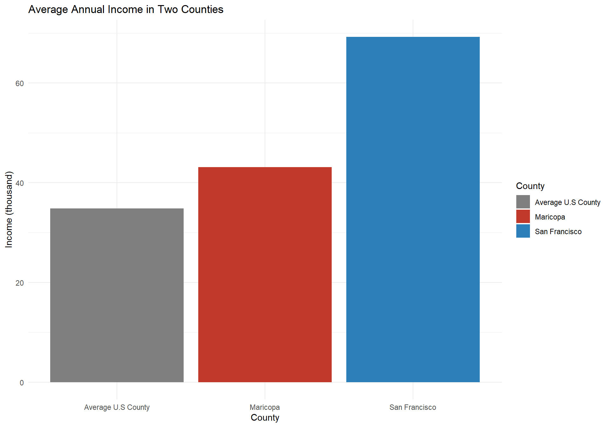
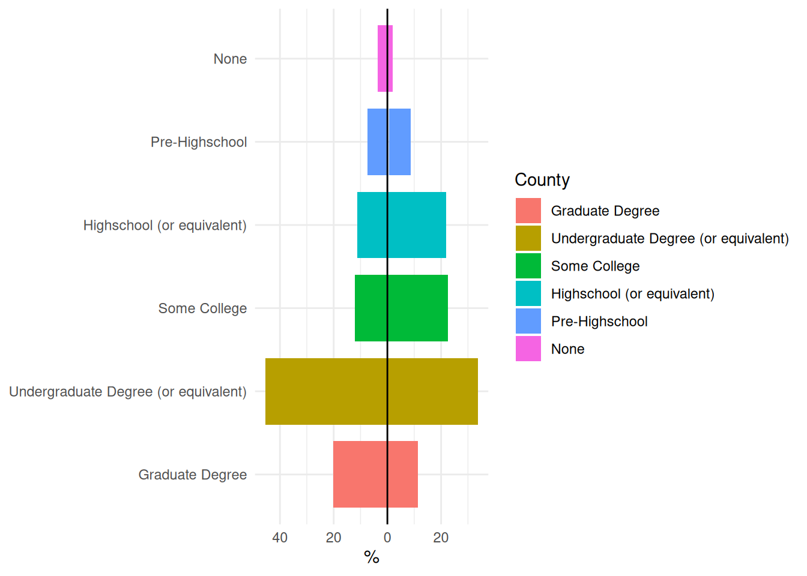
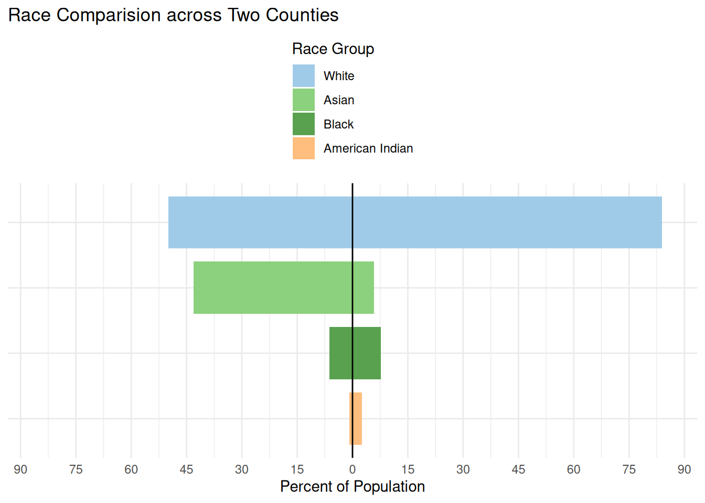
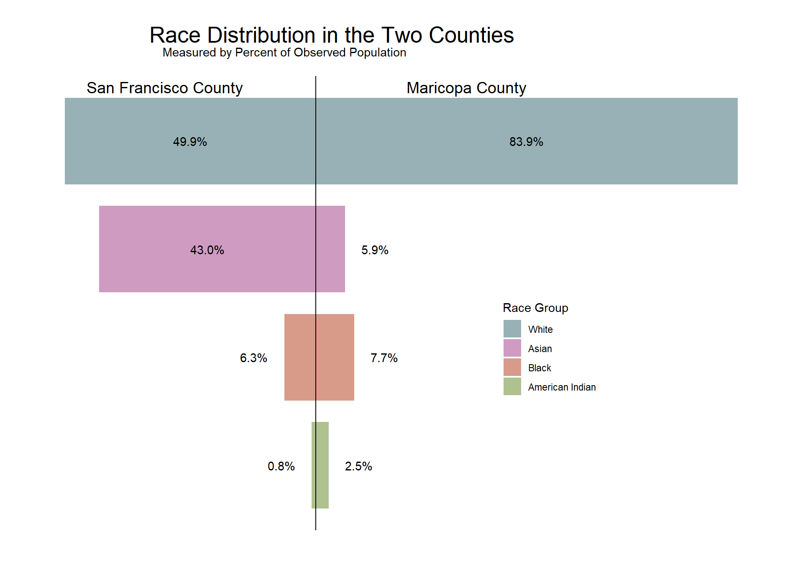
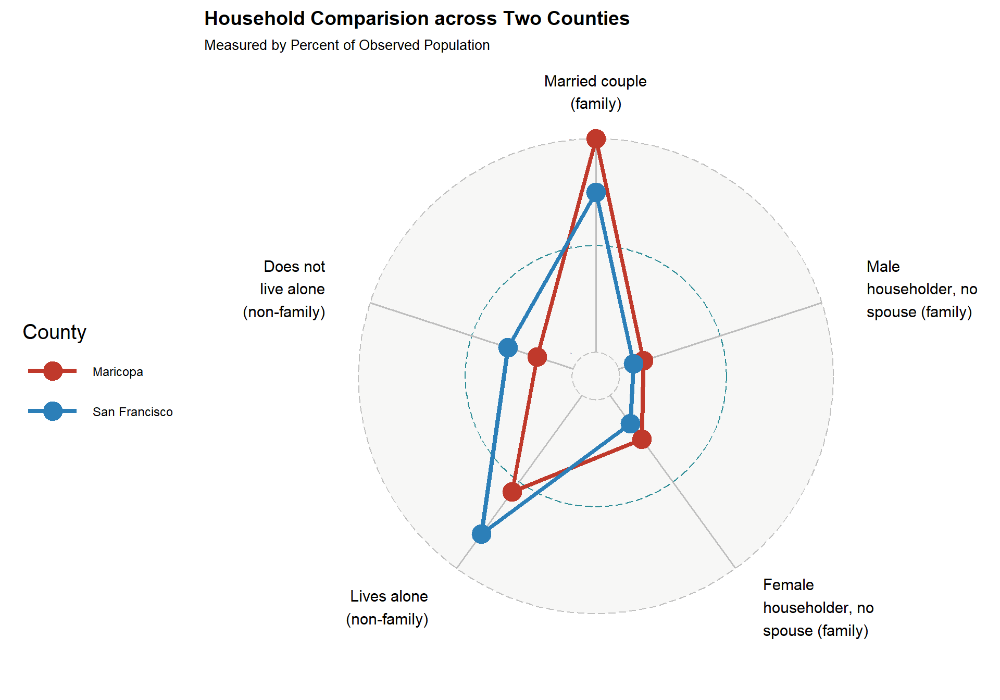
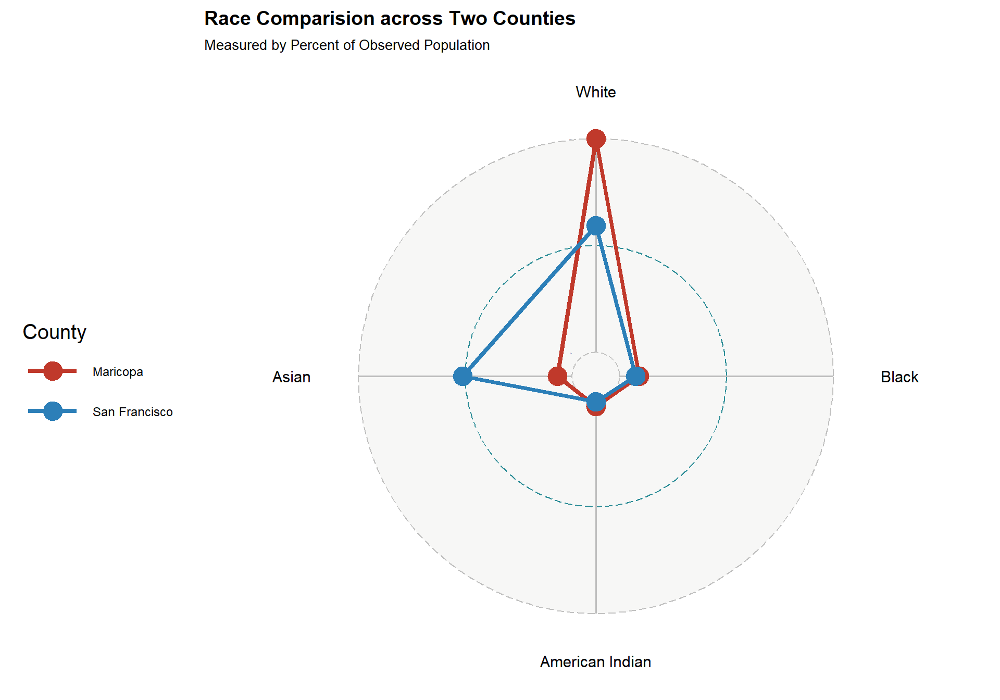
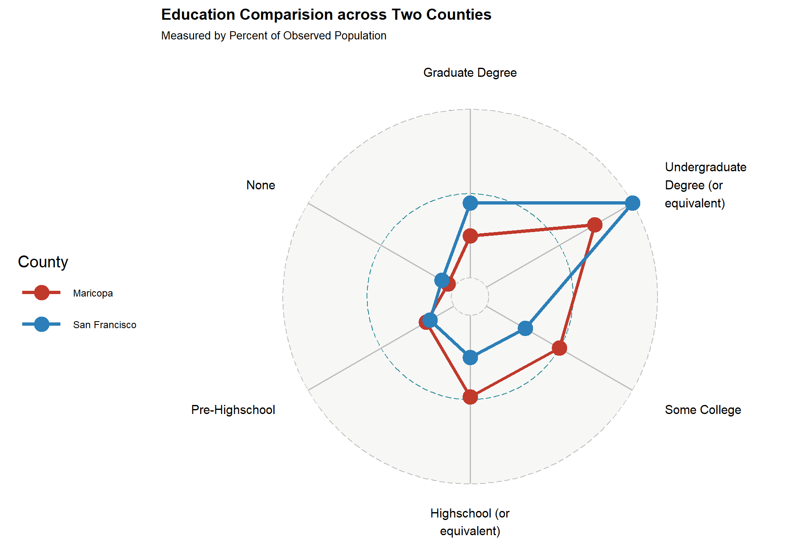

Member 2 First Name & Last Name Initial
Your exploratory data analysis of the team datasets go here.
Code
data <- rbind(sanfrancisco, mesa)
data <- data %>%
select(NAME, variable, estimate) %>%
rename("county" = "NAME",
"race" = "variable",
"population" = "estimate") %>%
mutate(race = case_when(
race == "B02001_002" ~ "White",
race == "B02001_003" ~ "Black",
race == "B02001_004" ~ "American Indian",
race == "B02001_005" ~ "Asian",
race == "B02001_006" ~ "Pacific Islander",
race == "B02001_007" ~ "Other",
race == "B02001_008" ~ "Two or more races"
)) %>%
mutate(county = case_when(
county == "San Francisco County, California" ~ "San Francisco",
county == "Maricopa County, Arizona" ~ "Maricopa"
))Code
data %>%
group_by(county) %>%
mutate(prop = population / sum(population)) %>%
ggplot(aes(x = county, y = prop, fill = race)) +
geom_bar(stat = "identity", position = "fill") +
scale_y_continuous(labels = scales::percent) +
labs(title = "Race Composition of Two Counties",
x = "County",
y = "Percent of Population",
fill = "Race Group") +
scale_fill_manual(values = c(
"#4E79A7", # steel blue
"#A0CBE8", # light blue
"#F28E2B", # orange
"#FFBE7D", # light orange
"#59A14F", # muted green
"#8CD17D", # light green
"#B6992D" # olive gold
)) +
theme_minimal()
Code
data5 <- data %>%
filter(race %in% c("White", "Black", "Asian", "American Indian")) %>%
mutate(race = factor(
race,
levels = c(
"American Indian",
"Black",
"Asian",
"White"
)
))
data5 %>%
group_by(county) %>%
mutate(prop = population / sum(population)) %>%
ggplot(aes(x = county, y = prop, fill = race)) +
geom_bar(stat = "identity", position = "fill") +
scale_y_continuous(labels = scales::percent) +
labs(title = "Race Composition of Two Counties",
x = "County",
y = "Percent of Population",
fill = "Race Group") +
scale_fill_manual(values = c(
"#FFBE7D",
"#59A14F",
"#8CD17D",
"#A0CBE8"
)) +
theme_minimal() +
coord_flip()
Code
sanfrancisco2 <- get_acs(
state = "CA",
county = "San Francisco",
geography = "county",
variables = c("B15003_002","B15003_003","B15003_004","B15003_005",
"B15003_006","B15003_007","B15003_008","B15003_009","B15003_010",
"B15003_011","B15003_012","B15003_013","B15003_014","B15003_015",
"B15003_016","B15003_017","B15003_018","B15003_019","B15003_020",
"B15003_021","B15003_022","B15003_023","B15003_024","B15003_025"),
year = 2023
)Code
mesa2 <- get_acs(
state = "AZ",
county = "Maricopa",
geography = "county",
variables = c("B15003_002","B15003_003","B15003_004","B15003_005",
"B15003_006","B15003_007","B15003_008","B15003_009","B15003_010",
"B15003_011","B15003_012","B15003_013","B15003_014","B15003_015",
"B15003_016","B15003_017","B15003_018","B15003_019","B15003_020",
"B15003_021","B15003_022","B15003_023","B15003_024","B15003_025"),
year = 2023
)Code
data2 <- rbind(sanfrancisco2, mesa2)
data2 <- data2 %>%
select(NAME, variable, estimate) %>%
rename("county" = "NAME",
"education" = "variable",
"population" = "estimate") %>%
mutate(education = case_when(
education == "B15003_002" ~ "None",
education == "B15003_003" ~ "Nursery",
education == "B15003_004" ~ "Kindergarten",
education == "B15003_005" ~ "Kindergarten",
education == "B15003_006" ~ "Kindergarten",
education == "B15003_007" ~ "Kindergarten",
education == "B15003_008" ~ "Kindergarten",
education == "B15003_009" ~ "Elementary",
education == "B15003_010" ~ "Elementary",
education == "B15003_011" ~ "Elementary",
education == "B15003_012" ~ "Elementary",
education == "B15003_013" ~ "Middle",
education == "B15003_014" ~ "Middle",
education == "B15003_015" ~ "Middle",
education == "B15003_016" ~ "Middle",
education == "B15003_017" ~ "Highschool (or equivalent)",
education == "B15003_018" ~ "GED",
education == "B15003_019" ~ "Some College",
education == "B15003_020" ~ "Some College",
education == "B15003_021" ~ "Associate's",
education == "B15003_022" ~ "Bachelor's",
education == "B15003_023" ~ "Master's",
education == "B15003_024" ~ "Professional",
education == "B15003_025" ~ "Doctorate"
)) %>%
mutate(education = case_when(
education == "None" ~ "None",
education == "Nursery" ~ "Pre-Highschool",
education == "Kindergarten" ~ "Pre-Highschool",
education == "Elementary" ~ "Pre-Highschool",
education == "Middle" ~ "Pre-Highschool",
education == "Highschool (or equivalent)" ~ "Highschool (or equivalent)",
education == "GED" ~ "Highschool (or equivalent)",
education == "Some College" ~ "Some College",
education == "Associate's" ~ "Undergraduate Degree (or equivalent)",
education == "Bachelor's" ~ "Undergraduate Degree (or equivalent)",
education == "Professional" ~ "Undergraduate Degree (or equivalent)",
education == "Master's" ~ "Graduate Degree",
education == "Doctorate" ~ "Graduate Degree",
)) %>%
mutate(county = case_when(
county == "San Francisco County, California" ~ "San Francisco",
county == "Maricopa County, Arizona" ~ "Maricopa"
))Code
data2 <- data2 %>%
group_by(county) %>%
mutate(prop = population / sum(population)) %>%
mutate(education = factor(
education,
levels = c(
"Graduate Degree",
"Undergraduate Degree (or equivalent)",
"Some College",
"Highschool (or equivalent)",
"Pre-Highschool",
"None"
)
))
data2 %>%
ggplot(aes(x = county, y = prop, fill = education)) +
geom_bar(stat = "identity", position = "fill") +
scale_y_continuous(labels = scales::percent) +
labs(title = "Highest Education Completed in Two Counties",
x = "County",
y = "Percent of Population",
fill = "Education Level") +
scale_fill_manual(values = c(
"#4E79A7",
"#A0CBE8",
"#59A14F",
"#8CD17D",
"#FFBE7D",
"#F28E2B"
)) +
theme_minimal() +
coord_flip()
Code
data3 <- rbind(sanfrancisco3, mesa3)
data3 <- data3 %>%
select(NAME, variable, estimate) %>%
rename("county" = "NAME",
"household" = "variable",
"population" = "estimate") %>%
mutate(county = case_when(
county == "San Francisco County, California" ~ "San Francisco",
county == "Maricopa County, Arizona" ~ "Maricopa"
)) %>%
mutate(household = case_when(
household == "B11001_003" ~ "Married couple (family)",
household == "B11001_005" ~ "Male householder, no spouse (family)",
household == "B11001_006" ~ "Female householder, no spouse (family)",
household == "B11001_008" ~ "Lives alone (non-family)",
household == "B11001_009" ~ "Does not live alone (non-family)"
)) %>%
mutate(household = factor(
household,
levels = c(
"Lives alone (non-family)",
"Does not live alone (non-family)",
"Female householder, no spouse (family)",
"Male householder, no spouse (family)",
"Married couple (family)"
)
))Code
data3 %>%
group_by(county) %>%
mutate(prop = population / sum(population)) %>%
ggplot(aes(x = county, y = prop, fill = household)) +
geom_bar(stat = "identity", position = "fill") +
scale_y_continuous(labels = scales::percent) +
labs(title = "Household Type in Two Counties",
x = "County",
y = "Percent of Population",
fill = "Household Type") +
scale_fill_manual(values = c(
"#F28E2B",
"#FFBE7D",
"#8CD17D",
"#59A14F",
"#4E79A7"
)) +
theme_minimal()
Code
data4 <- rbind(sanfrancisco4, mesa4)
data4 <- data4 %>%
select(NAME, estimate) %>%
rename("county" = "NAME",
"income" = "estimate") %>%
mutate(county = case_when(
county == "San Francisco County, California" ~ "San Francisco",
county == "Maricopa County, Arizona" ~ "Maricopa"),
income = income/1000)Code
ggplot(data4, aes(x = county, y = income)) +
geom_bar(stat = "identity") +
theme_minimal() +
labs(title = "Average Annual Income in Two Counties",
x = "County",
y = "Income (thousand)") +
scale_fill_manual(values = c(
"Average U.S County" = "#1b9e77",
"Maricopa" = "#d95f02",
"San Francisco" = "#7570b3"
))
Code
ggplot(data4, aes(x = county, y = income, fill = county)) +
geom_col() +
theme_minimal() +
labs(
title = "Average Annual Income in Two Counties",
x = "County",
y = "Income (thousand)",
fill = "County"
) +
scale_fill_manual(values = c(
"Average U.S County" = "#7F7F7F",
"Maricopa" = "#C0392B",
"San Francisco" = "#2C7FB8"
))
Code
data6 <- data3 %>%
group_by(county) %>%
mutate(prop = population/sum(population)*100) %>%
mutate(prop = if_else(
county == "San Francisco",
-prop,
prop
))
ggplot(data6, aes(x = household, y = prop, fill = household)) +
geom_col(width = 0.8) +
coord_flip() +
labs(title="Household Comparision across Two Counties",
subtitle = "Measured by Percent of Observed Population",
y = "Percent of Population", x = NULL, fill = "Household Type") +
theme_void() +
scale_fill_manual(values = c(
"#4E79A7",
"#F28E2B",
"#FFBE7D",
"#59A14F",
"#8CD17D"
)) +
geom_hline(yintercept = 0) +
guides(fill = guide_legend(reverse = TRUE)) +
theme(axis.text.y = element_blank(),
legend.position = c(0.84,0.47),
legend.direction = "vertical",
plot.title = element_text(hjust = 0.315, vjust = 3.5, size = 20),
plot.subtitle = element_text(hjust=0.265, vjust = 8),
plot.margin = margin(1, 1, 1, 1, "cm")) +
annotate("text", x= 5.5, y =-30, label = "San Francisco County", size = 5)+
annotate("text", x = 5.5, y= 30, label = "Maricopa County", size = 5)+
annotate("text", x= 5, y = -17.75, label = "35.5%")+
annotate("text", x= 4, y = -9.5, label = "3.5%")+
annotate("text", x =3, y = -3.85, label = "7.7%")+
annotate("text", x= 2, y = -7.6, label = "15.2%")+
annotate("text", x= 1, y =-19, label = "38.0%")+
annotate("text", x= 5, y = 23.65, label = "47.3%")+
annotate("text", x= 4, y = 11.7, label = "5.7%")+
annotate("text", x= 3, y = 6, label = "12.0%")+
annotate("text", x= 2, y = 4.25, label = "8.5%")+
annotate("text", x=1, y = 13.2, label = "26.4%")
Code
data8 <- data2 %>%
group_by(county, education) %>%
summarize(prop = sum(prop)) %>%
ungroup() %>%
mutate(prop = prop*100) %>%
mutate(prop = if_else(
county == "San Francisco",
-prop,
prop
)) %>%
mutate(education = factor(
education,
levels = c(
"None",
"Pre-Highschool",
"Highschool (or equivalent)",
"Some College",
"Undergraduate Degree (or equivalent)",
"Graduate Degree"
)
))
ggplot(data8, aes(x = education, y = prop, fill = education)) +
geom_col(width = 0.8) +
coord_flip() +
labs(title="Education Level across Two Counties",
subtitle = "Measured by Percent of Observed Population",
y = "Percent of Population", x = NULL, fill = "Highest Education Attained") +
theme_void() +
geom_hline(yintercept = 0) +
scale_fill_manual(values = c(
"#F28E2B",
"#FFBE7D",
"#8CD17D",
"#59A14F",
"#A0CBE8",
"#4E79A7"
)) +
guides(fill = guide_legend(reverse = TRUE)) +
theme(axis.text.y = element_blank(),
legend.position = c(0.23,0.3),
legend.direction = "vertical",
plot.title = element_text(hjust = 0.315, vjust = 3.5, size = 20),
plot.subtitle = element_text(hjust=0.265, vjust = 8),
plot.margin = margin(1, 1, 1, 1, "cm")) +
annotate("text", x= 6.5, y =-32, label = "San Francisco County", size = 5)+
annotate("text", x = 6.5, y= 22, label = "Maricopa County", size = 5)+
#
annotate("text", x= 6, y = -10.05, label = "20.1%")+
annotate("text", x= 5, y = -22.65, label = "45.3%")+
annotate("text", x= 4, y = -6, label = "12.0%")+
annotate("text", x =3, y = -5.65, label = "11.3%")+
annotate("text", x= 2, y = -3.75, label = "7.5%")+
annotate("text", x= 1, y =-7.85, label = "3.7%")+
annotate("text", x= 6, y = 5.65, label = "11.3%")+
annotate("text", x= 5, y = 16.8, label = "33.6%")+
annotate("text", x= 4, y = 11.3, label = "22.6%")+
annotate("text", x= 3, y = 11.5, label = "22.0%")+
annotate("text", x= 2, y = 4.3, label = "8.6%")+
annotate("text", x=1, y = 5.9, label = "1.9%")
Code
data7 <- data5 %>%
group_by(county) %>%
mutate(prop = population/sum(population)*100) %>%
mutate(prop = if_else(
county == "San Francisco",
-prop,
prop
)) %>%
ungroup()
ggplot(data7, aes(x = race, y = prop, fill = race)) +
geom_col(width = 0.8) +
coord_flip() +
labs(title="Race Distribution in the Two Counties",
subtitle = "Measured by Percent of Observed Population",
y = "Percent of Population", x = NULL, fill = "Race Group") +
theme_void() +
geom_hline(yintercept = 0) +
scale_fill_manual(values = c(
"#afc18f",
"#d89b89",
"#cf9bc1",
"#98b1b6"
)) +
guides(fill = guide_legend(reverse = TRUE)) +
theme(axis.text.y = element_blank(),
legend.position = c(0.7,0.4),
legend.direction = "vertical",
plot.title = element_text(hjust = 0.315, vjust = 3.5, size = 20),
plot.subtitle = element_text(hjust=0.265, vjust = 8),
plot.margin = margin(1, 1, 1, 1, "cm")) +
annotate("text", x= 4.5, y =-30, label = "San Francisco County", size = 5)+
annotate("text", x = 4.5, y= 30, label = "Maricopa County", size = 5)+
annotate("text", x= 4, y = -24.93, label = "49.9%")+
annotate("text", x =3, y = -21.53, label = "43.0%")+
annotate("text", x= 2, y = -12.3, label = "6.3%")+
annotate("text", x= 1, y =-6.8, label = "0.8%")+
annotate("text", x= 4, y = 41.95, label = "83.9%")+
annotate("text", x= 3, y = 11.8, label = "5.9%")+
annotate("text", x= 2, y = 13.68, label = "7.7%")+
annotate("text", x=1, y = 8.58, label = "2.5%")
Code
radar1 <- data6 %>%
select(-population) %>%
mutate(prop = abs(prop)) %>%
pivot_wider(
names_from = household,
values_from = prop
)
radar2 <- data7 %>%
select(-population) %>%
mutate(prop = abs(prop)) %>%
pivot_wider(
names_from = race,
values_from = prop
)
radar3 <- data8 %>%
mutate(prop = abs(prop)) %>%
pivot_wider(
names_from = education,
values_from = prop
)
radar4 <- cbind(radar1, radar2 %>% select(-county), radar3 %>% select(-county))Code
ggradar(
radar1,
group.colours = c("#C0392B", "#2C7FB8"),
axis.label.size = 4,
grid.label.size = 0,
axis.label.offset = 1.2
) +
labs(
title = "Household Comparision across Two Counties",
subtitle = "Measured by Percent of Observed Population"
) +
theme(
plot.title = element_text(size = 14, face = "bold"),
plot.subtitle = element_text(size = 10),
legend.title = element_text(size = 15),
legend.text = element_text(size = 9)
) +
guides(color = guide_legend(title = "County"))
Code
ggradar(
radar2,
group.colours = c("#C0392B", "#2C7FB8"),
axis.label.size = 4,
grid.label.size = 0,
axis.label.offset = 1.2
) +
labs(
title = "Race Comparision across Two Counties",
subtitle = "Measured by Percent of Observed Population"
) +
theme(
plot.title = element_text(size = 14, face = "bold"),
plot.subtitle = element_text(size = 10),
legend.title = element_text(size = 15),
legend.text = element_text(size = 9)
) +
guides(color = guide_legend(title = "County"))
Code
ggradar(
radar3,
group.colours = c("#C0392B", "#2C7FB8"),
axis.label.size = 4,
grid.label.size = 0,
axis.label.offset = 1.2
) +
labs(
title = "Education Comparision across Two Counties",
subtitle = "Measured by Percent of Observed Population"
) +
theme(
plot.title = element_text(size = 14, face = "bold"),
plot.subtitle = element_text(size = 10),
legend.title = element_text(size = 15),
legend.text = element_text(size = 9)
) +
guides(color = guide_legend(title = "County"))
Code
ggradar(
radar4,
group.colours = c("#C0392B", "#2C7FB8"),
axis.label.size = 4,
grid.label.size = 0,
axis.label.offset = 1.2
) +
labs(
title = "All Variable Comparision across Two Counties",
subtitle = "Measured by Percent of Observed Population"
) +
theme(
plot.title = element_text(size = 14, face = "bold"),
plot.subtitle = element_text(size = 10),
legend.title = element_text(size = 15),
legend.text = element_text(size = 9)
) +
guides(color = guide_legend(title = "County"))